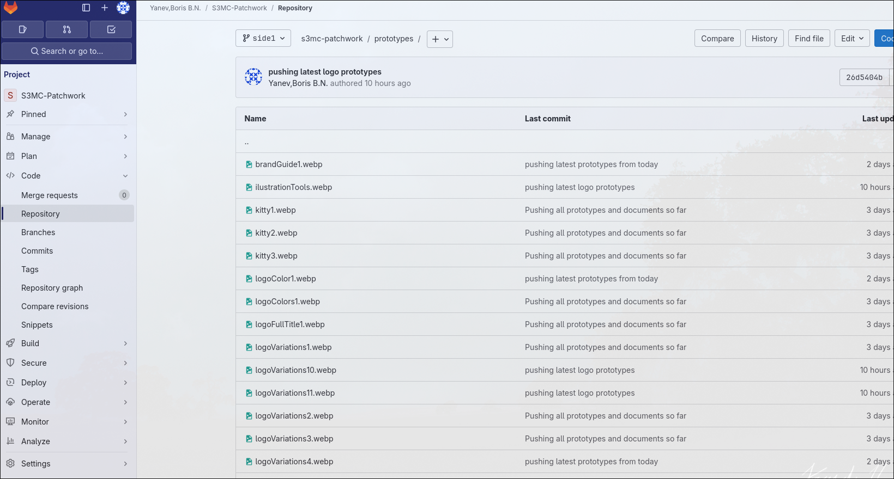
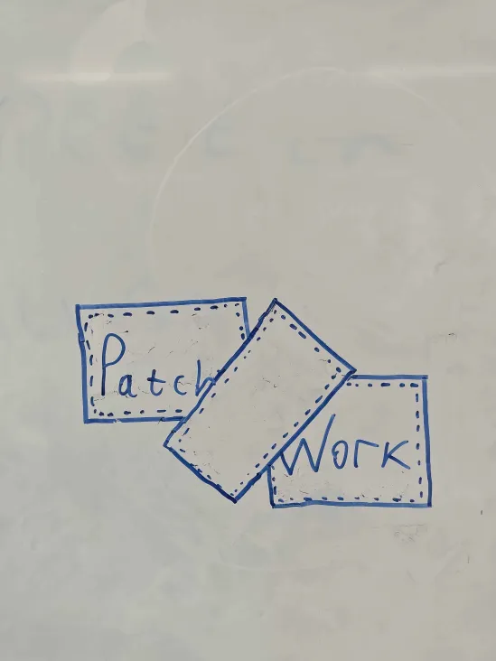
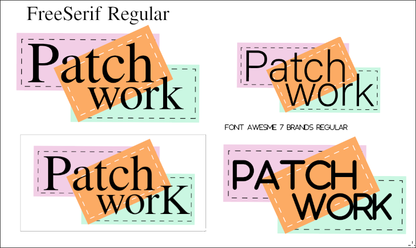
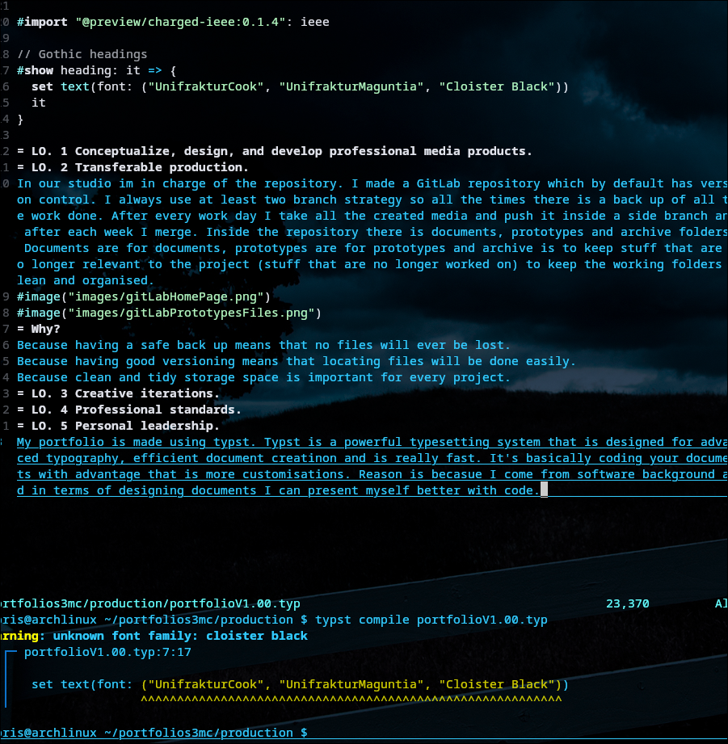

Hi, I'm Boris
Software Developer • Builder • Problem Solver
About Me
I'm a software developer studing in Media Creatinon semester that practices mostly Busness because I'm the scrum master of the team PatchWork. I also stduy infracstructure for fun. I even have a server in my room where I host a cloud and gitlab runners inside docker containers. I'm basically doing everything. My main goal is to be a 10x developer so it's expected of me to put more effort into studing everything ICT related.
Poster
Poster prototype for Patchwork brand. It is made in Gimp.
Patchwork Website Wireframe
Wireframe of a website for Patchwork. It is made using figma.
There is a lot of prototyping done and learned.
Link to Figma
Patchwork GitLab Repository
GitLab repository for Patchwork. It's designed with 2 branch
strategy, one main branch and one side branch. It has a rule
that forbids anyone from pushing in the main branch. The main
branch is only for merging at the end of each sprint. The
pushing happens only in the side branch. This is done to
ensure that there is one stable branch.
Link for repository

Patchwork Logo Whiteboard
Version of the logo i designed on the whiteboard wita a marker. It was just a idea mainly focused on having the rectangle on the middle empty.
Patchwork Fonts for Logo
On the top right corner of the image has the logo that Hanna designed but it had the issue that the font wasn’t good enough. Our group’s tone is that we are professional but can still be fun. Since the colors are already fun I designed the left two logos with more professional font (FreeSerif Regular). The top one is with regular text typing and the bottom one is with capital “K” on the word “worK” wich is there just because it looks good. The bottom right is there just becasue it looked a fitting based on visual judging.
Typst
Typst is a powerful typesetting system that is designed for advanced typography, efficient document creatinon and is really fast. It’s basically coding your documents with advantage that is more customisations. Reason is becasue I come from software background and in terms of designing documents I can present myself better with code.
Current Audience DOT Research
Research document for Deska's current audience done using the DOT research framework.
Jira
Jira board for Patchwork. I'm the Scrum Master and I manage the Jira Board.
Link to Jira Board